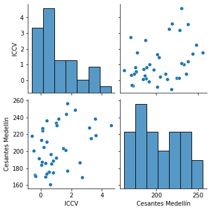
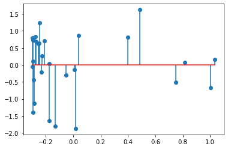
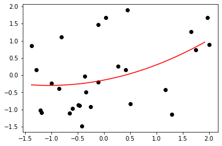
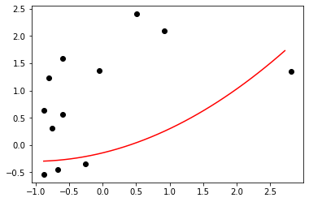

Regresión polinómica simple¶
Importar librerías¶
import numpy as np
import matplotlib.pyplot as plt
import pandas as pd
Importar datos¶
datos = pd.read_csv("vivienda.csv", sep = ";", decimal = ",")
datos.head()
| Períodos | Trimestre | IPVN | ICCV | ELIC | Cesantes Medellín | |
|---|---|---|---|---|---|---|
| 0 | 2010 | I | 0.29 | 1.179337 | 250907 | 238.343333 |
| 1 | 2010 | II | 2.02 | 1.003269 | 367528 | 233.409667 |
| 2 | 2010 | III | 2.80 | -0.559164 | 582280 | 218.040667 |
| 3 | 2010 | IV | 0.62 | 0.680330 | 518969 | 196.604000 |
| 4 | 2011 | I | 4.03 | 3.595829 | 575597 | 218.884333 |
datos.dtypes
Períodos int64
Trimestre object
IPVN float64
ICCV float64
ELIC int64
Cesantes Medellín float64
dtype: object
datos.describe()
| Períodos | IPVN | ICCV | ELIC | Cesantes Medellín | |
|---|---|---|---|---|---|
| count | 40.000000 | 40.000000 | 40.000000 | 40.000000 | 40.000000 |
| mean | 2014.500000 | 2.077243 | 1.094636 | 568054.550000 | 203.471985 |
| std | 2.908872 | 1.006100 | 1.258208 | 148336.569819 | 26.313283 |
| min | 2010.000000 | -0.040000 | -0.559164 | 250907.000000 | 160.823333 |
| 25% | 2012.000000 | 1.497500 | 0.191634 | 466532.500000 | 182.172917 |
| 50% | 2014.500000 | 2.015000 | 0.697474 | 565444.500000 | 200.982167 |
| 75% | 2017.000000 | 2.747500 | 1.699518 | 655019.750000 | 227.542833 |
| max | 2019.000000 | 4.030000 | 4.587157 | 867661.000000 | 256.285743 |
import seaborn as sns
sns.pairplot(datos.iloc[:, [3,5]]);

datos.iloc[:, [3,5]].corr()
| ICCV | Cesantes Medellín | |
|---|---|---|
| ICCV | 1.000000 | 0.374222 |
| Cesantes Medellín | 0.374222 | 1.000000 |
Variables independientes¶
X = datos.iloc[:, [3]]
print(X)
ICCV
0 1.179337
1 1.003269
2 -0.559164
3 0.680330
4 3.595829
5 1.461668
6 1.002804
7 0.532248
8 3.170000
9 0.140000
10 -0.443952
11 2.564172
12 1.684288
13 -0.086708
14 0.561489
15 2.726601
16 1.648361
17 0.337426
18 -0.358177
19 0.396358
20 3.272982
21 0.714617
22 1.745207
23 0.619684
24 3.549918
25 0.820894
26 0.086524
27 -0.317867
28 4.587157
29 0.053004
30 0.394175
31 0.814623
32 2.265125
33 1.072388
34 0.057230
35 0.307578
36 1.758036
37 0.394821
38 0.146487
39 0.206683
X.shape
(40, 1)
Variable dependiente¶
y = datos.iloc[:, [5]]
print(y)
Cesantes Medellín
0 238.343333
1 233.409667
2 218.040667
3 196.604000
4 218.884333
5 203.375667
6 192.057667
7 175.695667
8 228.121333
9 224.308667
10 200.924333
11 186.908000
12 243.700000
13 191.203333
14 175.510667
15 169.288333
16 201.040000
17 169.807333
18 172.106000
19 173.449000
20 215.383000
21 184.982000
22 176.775667
23 160.823333
24 238.406000
25 174.609333
26 187.434333
27 170.308667
28 230.529667
29 183.972000
30 211.015000
31 188.541667
32 248.515667
33 230.691000
34 213.001667
35 186.147333
36 256.285743
37 236.421000
38 227.350000
39 204.908333
y.shape
(40, 1)
Conjunto de entrenamiento y conjunto de testing¶
Seleccionar uno de los tres:
1. Últimos valores¶
def TimeSeriesTrainTestSplit(x, y, test_size):
test_index = int(len(X)*(1-test_size))
X_train = X.iloc[:test_index]
y_train = y.iloc[:test_index]
X_test = X.iloc[test_index:]
y_test = y.iloc[test_index:]
return X_train, y_train, X_test, y_test
X_train, y_train, X_test, y_test = TimeSeriesTrainTestSplit(X,y, 0.3)
2. Aleatorio¶
# from sklearn.model_selection import train_test_split
# X_train, X_test, y_train, y_test = train_test_split(X, y, test_size = 0.3)
3. Sin conjunto de entrenamientos ni de test¶
# X_train = X.iloc[:,:]
# y_train = y.iloc[:,:]
Estandarización de variables¶
from sklearn.preprocessing import StandardScaler
scaler_X = StandardScaler()
X_train = scaler_X.fit_transform(X_train)
X_test = scaler_X.transform(X_test)
scaler_y = StandardScaler()
y_train = scaler_y.fit_transform(y_train)
y_test = scaler_y.transform(y_test)
Transformación al grado del polinomio¶
from sklearn.preprocessing import PolynomialFeatures
poly = PolynomialFeatures(degree = 2)
X_train_poly = poly.fit_transform(X_train)
X_test_poly = poly.fit_transform(X_test)
Ajuste del modelo de Regresión polinómica con el conjunto de entrenamiento¶
from sklearn import linear_model
poly_regression = linear_model.LinearRegression()
poly_regression.fit(X_train_poly, y_train)
LinearRegression()
y_pred_train_poly = poly_regression.predict(X_train_poly)
y_pred_test_poly = poly_regression.predict(X_test_poly)
$ R^2 $ y MSE¶
from sklearn.metrics import mean_squared_error, r2_score
r2_score(y_train, y_pred_train_poly)
0.17387498611531993
mean_squared_error(y_train, y_pred_train_poly)
0.8261250138846802
r2_score(y_test, y_pred_test_poly)
-0.8140928500133979
mean_squared_error(y_test, y_pred_test_poly)
1.6097417571574972
Construir el modelo óptimo de RLM utilizando la Eliminación hacia atrás¶
import statsmodels.api as sm
modelo = sm.OLS(endog = y_train, exog = X_train_poly).fit()
print(modelo.summary())
OLS Regression Results
==============================================================================
Dep. Variable: y R-squared: 0.174
Model: OLS Adj. R-squared: 0.108
Method: Least Squares F-statistic: 2.631
Date: Mon, 14 Sep 2020 Prob (F-statistic): 0.0918
Time: 09:04:48 Log-Likelihood: -37.056
No. Observations: 28 AIC: 80.11
Df Residuals: 25 BIC: 84.11
Df Model: 2
Covariance Type: nonrobust
==============================================================================
coef std err t P>|t| [0.025 0.975]
------------------------------------------------------------------------------
const -0.1436 0.263 -0.546 0.590 -0.685 0.398
x1 0.2990 0.221 1.354 0.188 -0.156 0.754
x2 0.1436 0.190 0.756 0.457 -0.248 0.535
==============================================================================
Omnibus: 1.888 Durbin-Watson: 1.296
Prob(Omnibus): 0.389 Jarque-Bera (JB): 1.680
Skew: 0.552 Prob(JB): 0.432
Kurtosis: 2.531 Cond. No. 3.19
==============================================================================
Notes:
[1] Standard Errors assume that the covariance matrix of the errors is correctly specified.
Gráfico de Residuales¶
plt.stem(y_pred_train_poly, y_pred_train_poly - y_train, use_line_collection=True);

plt.stem(y_pred_test_poly, y_pred_test_poly - y_test, use_line_collection=True);

Visualizar los resultados de entrenamiento¶
X_grid = np.arange(X_train.min(), X_train.max(), 0.1)
X_grid = X_grid.reshape(len(X_grid), 1)
plt.scatter(X_train, y_train, color = "black")
plt.plot(X_grid, poly_regression.predict(poly.fit_transform(X_grid)), color = "red")
plt.show()

Visualizar los resultados de test¶
X_grid = np.arange(X_test.min(), X_test.max(), 0.1)
X_grid = X_grid.reshape(len(X_grid), 1)
plt.scatter(X_test, y_test, color = "black")
plt.plot(X_grid, poly_regression.predict(poly.fit_transform(X_grid)), color = "red")
plt.show()
